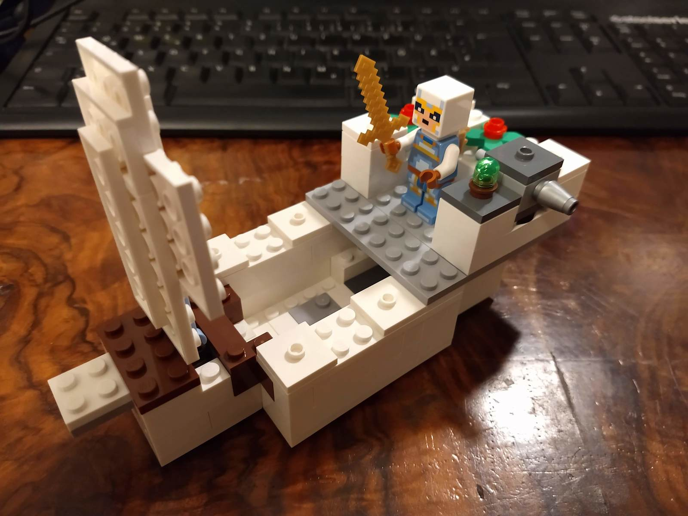
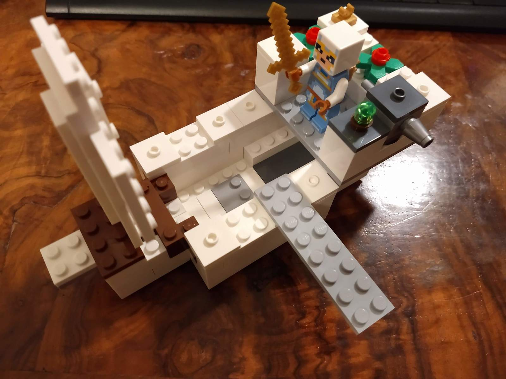
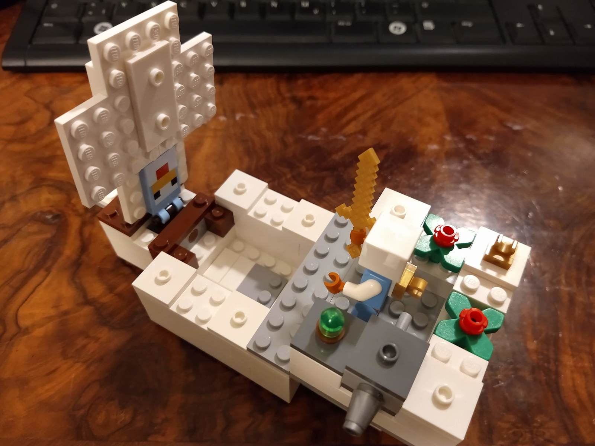
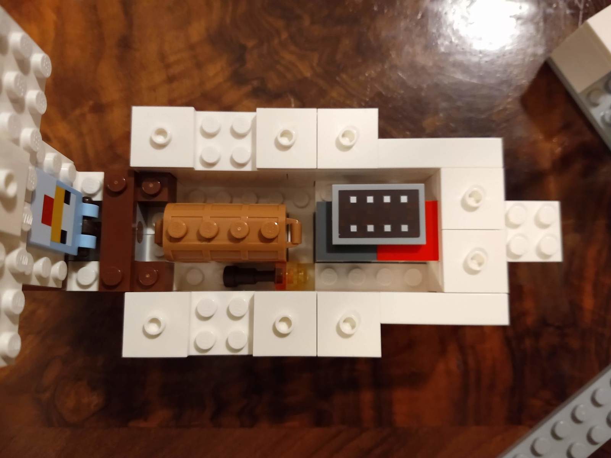
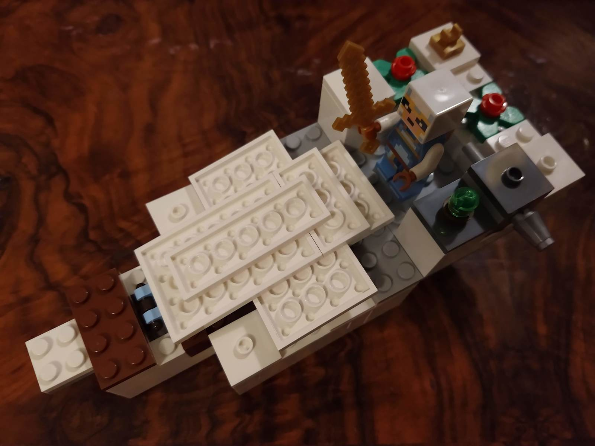
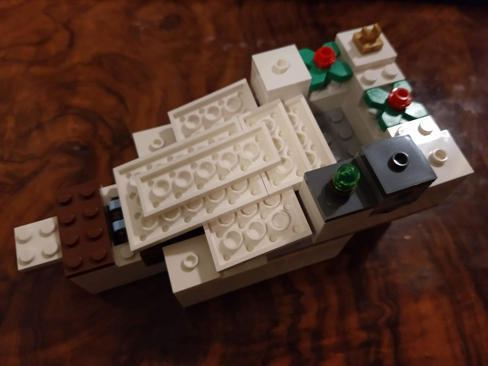

Minecraft Ivory Ship
oz, 2021-04-03
Made from:






Features
- Large storage space in trunk
- Rear cabin and plank can be removed and attached on various points, in various rotations
- Mast + sail can be lowered and lifted
- If some boat studs are attached to the bottom or the ship moves over uneven ground, the mast/sail assembly may wobble slightly giving a wind impression
- One cannon
- Various supplies